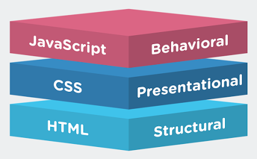

Problem Solver, Trouble Shooter

Full Stack Web Development, Tools and Talent
 Strong front-end skills with React/React Native, Vue.js JavaScript Frameworks and User Interface (UI) design. JavaScript Node.js (NPM) and Python(Flask and Django) back-end technology with JSON data structures and NoSQL MongoDB, and PostgresSQL. Development and understanding of RESTful API multiple endpoints and GraphQL API single end-point mechinisms. Full Git, CI/CD software automation, and Jasmine testing. Agile software development with Scrum methodology..
Complete DevOp managnment of Amazon Web Services, Google Cloud hosting & deployment. Docker swarm micro-services, Docker’s own container’s orchestration using Docker API and networking. Kubernetes, a open-source system for automating deployment, scaling, and management of containerized (Docker) applications. Deployed using a combination of pods, deployments, and micro-services.
Business Relations, The Terms
Corp-to-Corp 1099 relations prefered. W2 relations considered in the domains of Blockchain, Machine Learning, and A.I. Remote telecommuting must be an option. All relocation and onsite mandates must be full subsidized for. All compensation negotiations will be initiated only after details of the project are known, a fair budget has been determined, and after a resonable offer has been submitted. Crypto and Bitcoin are always prefered payment methods.